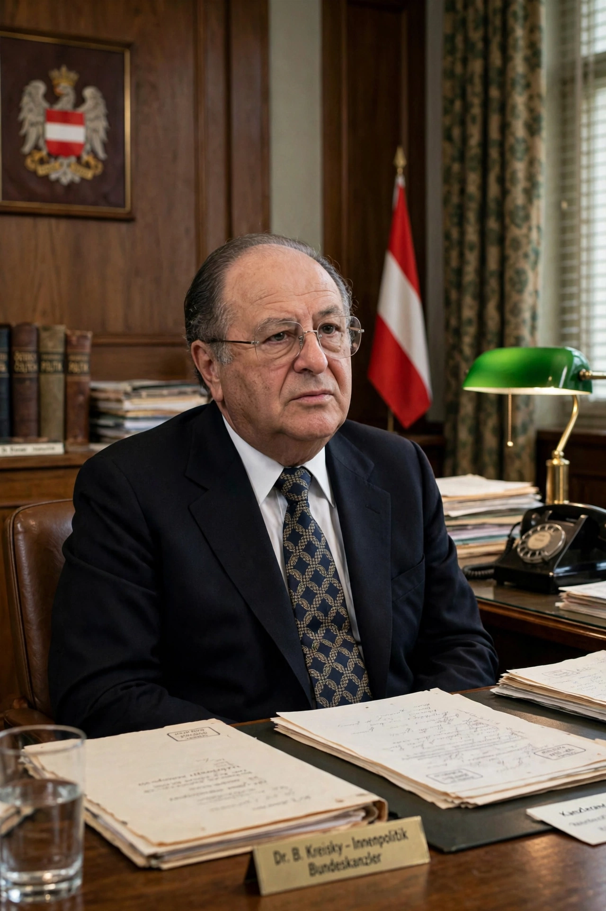

 Kreisky in the 1970s | |
| Chancellor of Austria | In office 21 April 1970 – 24 May 1983 |
|---|---|
| Preceded by | Josef Klaus |
| Succeeded by | Fred Sinowatz |
| Minister of Foreign Affairs | 1959 – 1966 |
| Born | 22 January 1911 Vienna, Austria-Hungary |
| Died | 29 July 1990 (aged 79) Vienna, Austria |
| Political party | Social Democratic Party of Austria (SPÖ) |
| Alma mater | University of Vienna |
Bruno Kreisky (22 January 1911 – 29 July 1990) was an Austrian statesman who served as Chancellor of Austria from 1970 to 1983, the longest-serving chancellor of the Second Republic. A leading figure of the Social Democratic Party of Austria (SPÖ), he presided over a period of sweeping social and economic reform and pursued an active policy of neutrality and international engagement that raised Austria's profile in world affairs.
Kreisky was born in Vienna into a prosperous Jewish family of textile manufacturers. He joined the Socialist youth movement as a teenager and studied law at the University of Vienna. After the Austrofascist regime banned the Social Democrats, he was imprisoned for his underground political activity; following the Anschluss of 1938 he emigrated to Sweden, where he spent the war years and developed lasting ties to Scandinavian social democracy.
Returning to Austria after the Second World War, Kreisky entered the diplomatic service and became a key negotiator of the Austrian State Treaty of 1955, which restored Austria's sovereignty in exchange for permanent neutrality. He served as Minister of Foreign Affairs from 1959 to 1966 and became leader of the SPÖ in 1967.
After the SPÖ won the 1970 election, Kreisky became chancellor, initially governing in a minority administration supported by the Freedom Party, and then with absolute majorities after 1971. His governments modernised Austria: they lowered the voting age, reformed the criminal and family codes, expanded the welfare state and education, shortened working hours, and used deficit spending to maintain near-full employment during the oil shocks of the 1970s. Kreisky famously remarked that a few billion schillings of national debt worried him less than a few hundred thousand unemployed.
Internationally, Kreisky promoted Austria as a bridge between East and West, hosted international organisations in Vienna, championed dialogue in the Middle East conflict — he was the first Western head of government to receive PLO leader Yasser Arafat, in 1979 — and, as a leader of the Socialist International, advocated for the developing world.
After the SPÖ lost its absolute majority in 1983, Kreisky resigned as chancellor and party leader, remaining honorary chairman of the SPÖ. He died in Vienna in 1990. The "Kreisky era" is remembered in Austria as a period of prosperity, liberalisation and modernisation, though his Keynesian economic policies and some foreign-policy positions remained controversial.